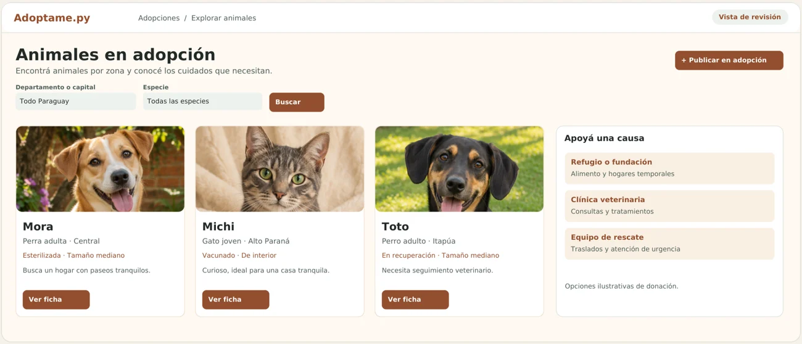
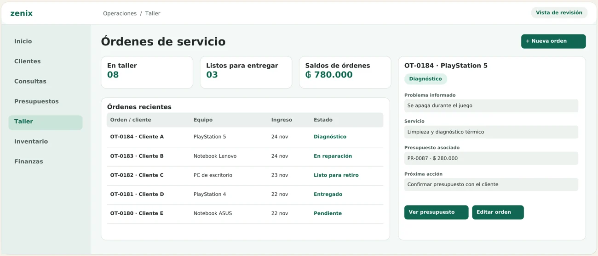
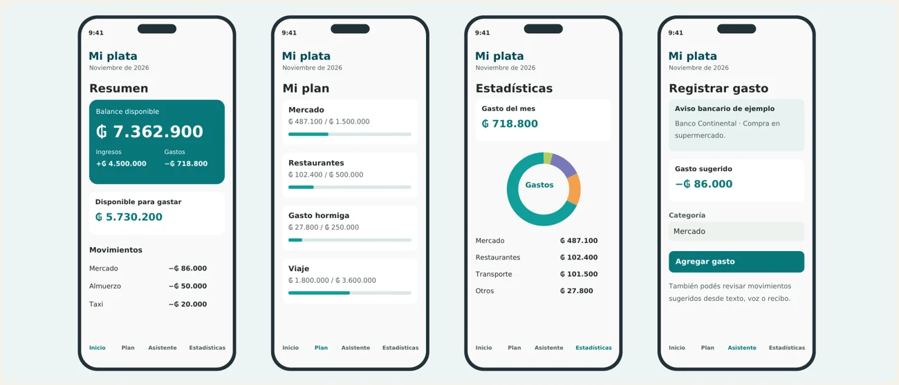
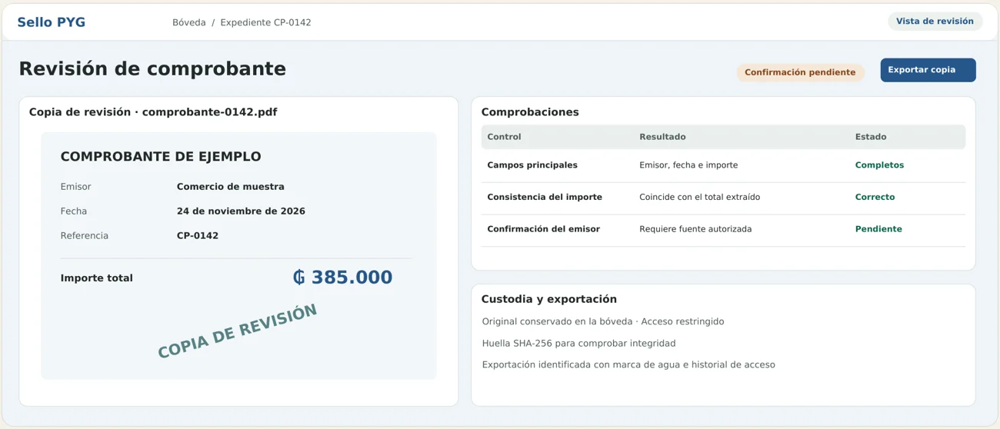
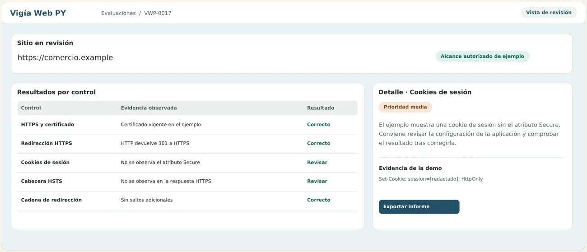

Demo · Impacto social
Adoptame.py
Recorré el catálogo, filtrá por zona y abrí una ficha para conocer los cuidados de cada animal.


Desarrollo de software y ciberseguridad · Paraguay
Me dedico al desarrollo de software y a la ciberseguridad defensiva. Empecé a formarme en estas áreas a los 15 años y actualmente curso una carrera universitaria para complementar mi experiencia práctica.

Tengo alrededor de 117 proyectos en GitHub. Esta selección reúne herramientas de gestión, seguridad y finanzas, además de una iniciativa social que sigo desarrollando.
Demo · Impacto social
Recorré el catálogo, filtrá por zona y abrí una ficha para conocer los cuidados de cada animal.

Demo · Gestión de taller
Alterná entre órdenes, presupuestos e inventario. Elegí un registro para revisar el detalle en el mismo escritorio.

Demo navegable · Análisis defensivo
Revisá un caso de suplantación, contrastá las evidencias y consultá el dictamen del analista.
Demo navegable · Finanzas personales
Navegá por el resumen, el plan de gastos, las estadísticas y el registro asistido, con importes en guaraníes.

Demo · Revisión documental
Compará el comprobante con los campos extraídos y revisá la diferencia entre consistencia y confirmación del emisor.

Demo navegable · Seguridad web
Filtrá los controles que requieren revisión y consultá la evidencia y el siguiente paso para cada hallazgo.

Currículum
En curso
Actualmente curso una carrera universitaria para profundizar mi formación técnica y darle respaldo académico.
Egreso · 2025
Copias con identificadores de credencial ocultos.
Microsoft · Febrero de 2026
AWS · Mayo de 2025
Google Cloud · Junio de 2025
Contacto
Si querés trabajar conmigo, colaborar en alguno de mis proyectos o apoyar una iniciativa social como Adoptame.py, escribime por la red donde encontraste este portafolio. Si hace falta, te paso mi número por privado.